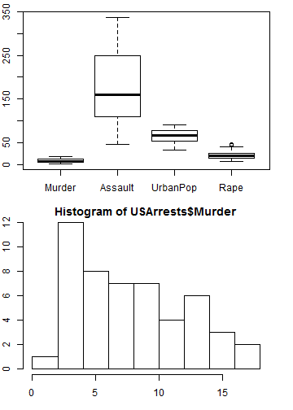

Danger Zone
Crime Rates by US State
MartinSRC
Head Marketer of Danger Mouse Crime Apps
Big Problem (1/5)
The United States suffers from: Crime.
- Which states are safe and which should we avoid?
- We have data to exploit: USArrests
- All we need do is analyse it
kable(head(USArrests),format='markdown')
| Murder | Assault | UrbanPop | Rape | |
|---|---|---|---|---|
| Alabama | 13.2 | 236 | 58 | 21.2 |
| Alaska | 10.0 | 263 | 48 | 44.5 |
| Arizona | 8.1 | 294 | 80 | 31.0 |
| Arkansas | 8.8 | 190 | 50 | 19.5 |
| California | 9.0 | 276 | 91 | 40.6 |
| Colorado | 7.9 | 204 | 78 | 38.7 |

Base Plots (2/5)
Are we going to do it the old fashion way with base R?
summary(USArrests) #Boring!
Murder Assault UrbanPop Rape
Min. : 0.80 Min. : 45 Min. :32.0 Min. : 7.3
1st Qu.: 4.08 1st Qu.:109 1st Qu.:54.5 1st Qu.:15.1
Median : 7.25 Median :159 Median :66.0 Median :20.1
Mean : 7.79 Mean :171 Mean :65.5 Mean :21.2
3rd Qu.:11.25 3rd Qu.:249 3rd Qu.:77.8 3rd Qu.:26.2
Max. :17.40 Max. :337 Max. :91.0 Max. :46.0
boxplot(USArrests) #Lame!
hist(USArrests$Murder) #Eww!
There's got to be a better way!?
Danger Mouse Crime Apps presents...

Danger Zone! (3/5)
Features (4/5)
- Loess Smoother Trend Modelling? Got it!
- State Name Display for easy reading? You bet!
- Complete X and Y Variable manipulation? Oorah!
- Heat colour functionality that works on names? Hot!
- Automated cut'n'label of variables for facets? Divisive!
Support using all features simultaneously? Orchestral!
Danger Mouse Crime Apps: Because there's always and app for that.
Code (5/5)
server.R
library(shiny)
library(ggplot2)
shinyServer(
function(input, output) {
cuts <- c('Low','Middle','High')
z <- apply(USArrests, 2, cut, breaks=3,labels=cuts)
colnames(z) <- paste0('By',colnames(z))
arrests <- cbind(USArrests,z)
i <- 5
for(i in i:8) arrests[,i] <- factor(arrests[,i],levels=rev(cuts))
output$plot <- reactivePlot( function() {
ggp <- ggplot(arrests,aes_string(x=input$x, y=input$y)) +
theme_bw() + geom_point()
facet <- paste0(input$facet,'~.')
if (input$colour != 'None')
ggp <- ggp + aes_string(color=input$colour) +
scale_colour_gradientn(colours=rev(heat.colors(2)))
if (facet != '.~.')
ggp <- ggp + facet_grid(facet)
if (input$smooth)
ggp <- ggp + geom_smooth()
if (input$statenames)
ggp <- ggp + geom_text(aes(label=gsub(' ','',rownames(USArrests))))
print(ggp)
},
height=800)})
ui.R
library(shiny)
dataset <- USArrests
shinyUI(pageWithSidebar(
titlePanel('Danger Zone: Crime Rates by US State'),
sidebarPanel(
h3('Supporting Documentation'),
helpText('This app shows a scatter plot of the US Crime Rates data set.'),
helpText('To help you get started, the available widgets are:'),
p('1. Add a Loess smooth line'),
p('2. Replacing dots with US State names'),
p('3. Changing variables on the X and Y axis'),
p('4. Adding HEAT colours (i.e. red = more crime)'),
p('5. Facetting the data into three groups'),
checkboxInput('smooth', 'Add Loess Smoother'),
checkboxInput('statenames', 'Add State Names'),
selectInput('x','X-Axis Variable',names(dataset), names(dataset)[[3]]),
selectInput('y','Y-Axis Variable',names(dataset), names(dataset)[[2]]),
selectInput('colour', 'Add Colours', c('None', names(dataset))),
selectInput('facet','Add Facet', c(None='.', paste0('By',names(dataset))))
),
mainPanel(plotOutput('plot'))
))
Invest, and fight crime with data analysis.